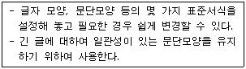
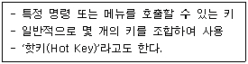
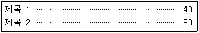
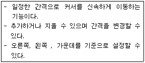
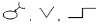
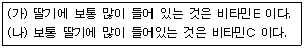
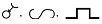
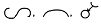

워드프로세서-2급(폐지) (2009-10-11 기출문제)
1과목: 워드프로세서 용어 및 기능
1. 다음 중 ‘그림.bmp’라는 이미지 파일을 워드프로세서 문서에 입력하는 방법으로 옳지 않은 것은?
- 개체 삽입 기능을 이용하여 해당 파일의 내용을 문서에 삽입한다.
- 메뉴의 ‘[파일]-[열기]를 실행하여 그림 파일을 삽입한다.
- 그림판에서 불러온 해당 그림을 복사(Ctrl + C)한 후 문서에서 붙이기(Ctrl + V)한다.
- 개체 삽입 및 연결 기능을 이용하여 해당 파일의 내용을 문서에 삽입한다.
(정답률: 61%)

2. 다음은 편집기능 중 무엇에 대한 설명인가?

- 스타일(Style)
- 병합(Merge)
- 상용구(Glossary)
- 템플릿(Template)
(정답률: 89%)
3. 다음 중 메일 머지(Mail Merge) 기능이 사용될 가능성이 가장 적은 것은?
- 연구보고서
- 주소라벨
- 초대장
- 안내장
(정답률: 83%)
4. 다음 중 행의 오른쪽 끝 부분에 위치하는 영문 단어의 길이가 길어서 다음 행의 처음에 걸칠 때 자동으로 그 단어를 다음 줄로 이동시키는 기능은?
- 피치조절
- 장평조절
- 영문균등
- 워드랩
(정답률: 77%)
5. 다음 보기에서 설명하는 용어는 무엇인가?

- 토글키
- 바로가기 키
- 기능키
- 숫자키
(정답률: 77%)
6. 문서를 정정한 때에 문서의 여백에 정정한 자수를 표시하고 반드시 관인을 찍어야 하는 문서는?
- 기안문
- 시행문
- 모든 공문서
- 전자문서
(정답률: 63%)
7. 다음 중 토글(Toggle)키로만 짝지어진 것은?
- [F1], [Enter]
- [Esc], [Caps Lock]
- [Caps Lock], [Insert]
- [Page Down], [Shift]
(정답률: 90%)
8. 다음 중 문서의 페이지 상, 하, 좌, 우에 주어지는 여백을 나타내는 용어는?
- 두문(Header)
- 마진(Margin)
- 미문(Footer)
- 스크롤(Scroll)
(정답률: 85%)
9. 다음 중 치환(찾아 바꾸기) 기능에 대한 설명으로 옳지 않은 것은?
- 영문 대·소문자 사이의 치환이 가능하다.
- 영역을 지정하여 해당 부분만 치환할 수 있다.
- 글자의 크기, 서체, 속성 등은 변경할 수 없다.
- 한글, 한자, 영어, 특수문자끼리 서로 치환이 가능하다.
(정답률: 70%)
10. 다음 내용을 가장 빠르게 입력시킬 수 있는 방법은?

- 점끌기 탭(tab) 사용
- 오른쪽 정렬 설정
- 왼쪽 정렬 사용
- 메일 머지 사용
(정답률: 92%)
11. 다음 보기의 내용은 어떤 기능에 대한 설명인가?

- 단(다단) 기능
- 래그드(Ragged)
- 탭 기능
- 치환 기능
(정답률: 80%)
12. 다음은 화면 표시 방식 중 그래픽 모드에 대한 설명이다. 옳지 않은 것은?
- 화면은 픽셀(Pixel) 단위로 구성되어 있다.
- 위지윅(WYSIWYG) 방식으로 작업이 편리하다.
- 텍스트 모드보다 기억공간을 많이 차지한다.
- 텍스트 모드에 비하여 처리 속도가 빠르다.
(정답률: 67%)
13. 다음 중 인쇄하기 전에 문서의 레이아웃(Layout)을 미리화면에 나타내 보이게 하는 기능은 어느 것인가?
- 머지인쇄(Merge Print)
- 미리보기(Preview)
- 매크로(Macro)
- 하드카피(Hard Copy)
(정답률: 87%)
14. 다음 중 워드프로세서의 입력 기능에 대한 설명으로 틀린 것은?
- 음을 모르는 한자를 입력할 경우에는 음절 단위 또는 단어 단위 변환 방법을 사용한다.
- 한 행의 내용이 꽉 차기 전에 [Enter}키를 사용하여 줄을 바꾸는 것을 ‘강제 개행’ 이라고 한다.
- 한글 입력은 2벌식과 3벌식 자판을 사용할 수 있으며 일반적으로 2벌식을 표준으로 사용한다.
- 2벌식 자판을 사용하여 한글을 입력하려면 한글의 자음과 모음을 글자의 순서대로 입력하면 된다.
(정답률: 63%)
15. 다음은 문서의 성립 및 효력 발생에 관한 설명이다. 옳지 않은 것은?
- 문서는 당해 문서에 대한 결재권자의 결재가 있음으로써 성립한다.
- 결재권자의 결재에 있어서 전자서명은 포함되지 않는다.
- 문서는 수신자에게 도달됨으로써 효력이 발생한다.
- 전자문서는 수신자의 컴퓨터 파일에 기록됨으로써 효력이 발생된다.
(정답률: 71%)
16. 다음 중 CPU와 주기억 장치 사이에 위치하며 두 장치 사이의 속도 차이를 극복하기 위한 저장장치는?
- Cache Memory
- Main Memory
- Virtual Memory
- Flash Memory
(정답률: 84%)
17. 다음 중 새로운 내용을 입력하면 원래의 내용이 지워지면서 다른 내용이 입력되는 상태로 겹쳐 쓰기(Overwrite)라고도 하는 기능은?
- 삽입
- 복사
- 수정
- 이동
(정답률: 86%)
18. 다음 중 문서관리의 표준화에 들지 않는 것은?
- 문서 양식의 표준화
- 문서 처리 규정의 표준화
- 문서 표현 방법의 표준화
- 문서 내용의 표준화
(정답률: 62%)
19. 다음 중 문서의 분량이 감소될 수 있는 교정 부호로만 묶인 것은?

(정답률: 80%)
20. 다음은 (가)의 문장을 교정부호를 사용하여 (나)의 문장 형태로 수정한 것이다. 수정할 때 사용된 교정보호의 순서가 올바르게 나열된 것은?



(정답률: 91%)
2과목: PC 운영 체제
21. 다음 중 한글 Windows XP의 [검색 결과] 창에서 파일을 검색하기 위하여 사용할 수 있는 옵션으로 옳지 않은 것은?
- 파일의 작성자
- 파일의 수정된 특정 기간
- 파일의 특정 크기
- 파일의 찾는 위치
(정답률: 61%)
22. 다음 중 한글 Windows XP의 기능에 대한 설명으로 옳지 않은 것은?
- 하나의 컴퓨터를 사용하는 여러 사용자마다 사용 환경을 다르게 설정할 수 있다.
- Windows Media Player를 이용하여 간단하게 동영상을 편집할 수 있다.
- 소규모 네트워크를 구축할 수 있다.
- 파일 시스템으로 FAT, FAT32와 NTFS를 지원한다.
(정답률: 62%)
23. 다음 중 한글 Windows XP에서 [작업 표시줄]에 관한 설명으로 옳지 않은 것은?
- [시작] 단추가 있는 화면의 표시줄이다.
- 현재 컴퓨터에서 실행되는 프로그램을 나타내는 단추가 표시된다.
- [작업 표시줄]을 이용하면 2개 이상의 프로그램을 동시에 활성화시킬 수 있다.
- 실행중인 프로그램에서 다른 프로그램으로 전환하려면 작업 표시줄에서 해당 단추를 클릭한다.
(정답률: 73%)
24. 다음 중 한글 Windows XP에서 인터넷을 사용하기 위하여 해당 컴퓨터의 IP 주소를 동적으로 구성하는 방법은?
- DHCP
- POP
- FTP
- SMTP
(정답률: 71%)
25. 한글 Windows XP의 [디스크 정리] 프로그램으로 디스크 공간을 확보하기 위하여 제거할 수 있는 항목으로 옳지 않은 것은?
- 백업 파일
- 다운로드한 프로그램 파일
- 휴지통 내의 파일
- 임시 인터넷 파일
(정답률: 65%)
26. 한글 Windows XP[그림판]에서 [선택] 도구에 의해 지정된 부분만 그림파일로 디스크에 저장하려고 할 경우에 메뉴 선택 방법으로 옳은 것은?
- [파일]-[저장]
- [편집]-[선택 영역 저장]
- [파일]-[다른 이름으로 저장]
- [편집]-[파일로부터 붙여 넣기]
(정답률: 65%)
27. 다음 중 한글 Windows XP의 문서 편집기인 [메모장] 프로그램에서 할 수 있는 기능으로 옳지 않은 것은?
- 자동 줄 바꿈 기능
- 출력 용지 및 여백 설정 기능
- 출력 용지에 머리글, 바닥글 작성 기능
- 글자의 색상과 글꼴 지정 기능
(정답률: 72%)
28. 한글 Windows XP에서 [Ctrl]-[Alt]-[Delete] 키를 동시에 누른 이후에 할 수 있는 작업으로 옳지 않은 것은?
- 특정 응용 프로그램의 작업 끝내기
- 시스템 종료
- 현재 실행중인 프로그램의 목록 보기
- 응답이 없는 응용 프로그램의 삭제
(정답률: 59%)
29. 한글 Windows XP에서 [프린터 및 팩스] 창에 있는 기본 프린터의 아이콘을 더블 클릭하였을 때 나타나는 결과는?
- 기본 프린터가 자동으로 켜진다.
- 현재 열려져 있는 파일이 프린트된다.
- 기본 프린터의 인쇄 관리자(대기열) 창이 표시된다.
- 기본 프린터 드라이버의 재설치를 문의하는 대화상자가 표시된다.
(정답률: 68%)
30. 한글 Windows XP에서 현재 사용 중인 운영체제 시스템이 설치되어 있지 않은 하드 디스크 드라이브의 [포맷] 창에서 [빠른 포맷]에 관한 설명으로 가장 옳지 않은 것은?
- 디스크에서 파일을 모두 제거하게 된다.
- 이전에 포맷된 디스크에만 사용할 수 있다.
- 불량 섹터를 검사하지 않는다.
- 디스크가 손상되었을 경우에 선택한다.
(정답률: 49%)
31. 다음 중 한글 Windows XP에서 사용하는 바로가기 키에 관한 설명으로 옳지 않은 것은?
- [Ctrl]+[Tab] : 다른 창으로 작업 전환을 할 때 사용한다.
- [윈도우 로고키]+[F] : [검색 결과] 창을 표시할 때 사용한다.
- [Ctrl]+[A] : 전체 항목을 선택할 때 사용한다.
- [F2] : 선택한 파일, 폴더 등의 이름을 변경할 때 사용한다.
(정답률: 59%)
32. 한글 Windows XP에서 [프로그램 추가/제거] 대화상자에서 선택할 수 있는 항목이 아닌 것은?
- [기본 프로그램 설정]
- [MS-DOS 시동 디스크 작성]
- [프로그램 변경/제거]
- [새 프로그램 추가]
(정답률: 76%)
33. 다음 중 한글 Windows XP에 설치된 프린터의 [속성] 창에서 설정할 수 있는 내용으로 옳지 않은 것은?
- 테스트 페이지 인쇄
- 해당 프린터의 공유 설정
- 프린터 포트의 설정
- 인쇄 중인 모든 문서의 취소
(정답률: 65%)
34. 다음 중 한글 Windows XP의 [마우스 등록정보] 창에서 설정할 수 있는 것으로 옳지 않은 것은?
- 왼손잡이를 위한 마우스 단추 설정을 할 수 있다.
- 마우스 포인터의 모양을 변경할 수 있다.
- 마우스 포인터의 동작 속도를 변경할 수 있다.
- 마우스를 연결하는 포트를 바꿀 수 있다.
(정답률: 63%)
35. 다음 중 한글 Windows XP[시스템 등록 정보] 창을 이용하여 할 수 있는 작업으로 옳은 것은?
- 사용자 계정의 암호를 변경한다.
- 시스템의 날짜와 시간을 변경할 수 있다.
- 화면의 해상도를 변경할 수 있다.
- 하드웨어 장치 드라이버를 제거할 수 있다.
(정답률: 50%)
36. 다음 중 한글 Windows XP에서 [시작] 메뉴를 보기 위한 방법으로 옳지 않은 것은?
- [시작] 단추를 마우스로 클릭한다.
- [Ctrl]+[Esc] 키를 누른다.
- 마이크로소프트 Windows XP 호환 키보드를 사용하는 경우에 [윈도우 로고] 키를 누른다.
- 바탕화면의 바로가기 메뉴에서 [시작] 메뉴를 선택한다.
(정답률: 55%)
37. 다음 중 한글 Windows XP에서 네트워크 사용을 위한 하드웨어로 옳은 것은?
- 네트워크 어댑터
- 프로토콜
- 하이퍼터미널
- 방화벽
(정답률: 60%)
38. 한글 Windows XP에서 사용하는 바로가기 아이콘에 대한 설명으로 옳지 않은 것은?
- 바로가기 아이콘은 왼쪽 아래 부분에 꺾어진 화살표 표시가 붙는다.
- 바로가기 아이콘을 삭제할 경우에 원본 프로그램에는 영향을 주지 않는다.
- 바탕화면에만 만들 수 있다.
- 해당 파일이나 폴더의 바로가기 메뉴를 사용하여 바로가기 아이콘으로 만들 수 있다.
(정답률: 73%)
39. 한글 Windows XP에서 사용하는 폴더와 관련된 설명으로 옳지 않은 것은?
- 하위 폴더를 만들려면 원하는 위치에서 바로 가기 메뉴의 [새로 만들기]에서 [폴더]를 선택한다.
- 폴더는 읽기 전용과 숨김의 특성을 갖는다.
- 폴더 창에서 하위 폴더를 만들려면 주메뉴 [파일]의 [새로 만들기]에서 [폴더]를 선택한다.
- 폴더 창에 있는 하위 폴더 아이콘 위에서 마우스의 오른쪽 버튼을 더블 클릭하면 복사할 수 있다.
(정답률: 64%)
40. 한글 Windows XP에서 바탕화면에 있는 [내 컴퓨터] 바로 가기 메뉴의 선택 항목이 아닌 것은?
- 바로 가기 만들기
- 컴퓨터 찾기
- 삭제
- 이름 바꾸기
(정답률: 70%)
3과목: PC 기본 상식
41. 다음 중 특정 망에서 다수의 컴퓨터 시스템들을 함께 연결하기 위하여 사용하는 중앙분배장치를 말하는 것으로 수동식과 능동식이 있으며 최근에는 망관리 기능도 포함되어 있는 통신기기는 무엇인가?
- 라우터(Router)
- 게이트웨이(Gateway)
- 허브(Hub)
- 리피터(Repeater)
(정답률: 62%)
42. 다음 중 시스템 프로그램에 속하지 않는 것은?
- 컴파일러(Compiler)
- 버퍼(Buffer)
- 어셈블러(Assembler)
- 로더(Loader)
(정답률: 68%)
43. 다음 중 인터넷 보안을 위한 조건으로 거리가 먼 것은?
- 가용성
- 기밀성
- 무결성
- 상속성
(정답률: 58%)
44. 다음 중 자료 구성에 대한 설명으로 옳지 않은 것은?
- 자료(Data)는 관찰이나 측정을 통해 수집한 단순한 사실이나 결과 값을 의미한다.
- 문자를 표현하는 기본 단위는 워드(Word)이며 정보의 최소 단위이기도 하다.
- 원자자료를 유용하게 사용될 수 있도록 가공 처리한 것을 정보(Information)라 한다.
- 하나 이상의 필드(Field)가 모여 레코드(Record)를 구성하며 자료의 처리 단위이다.
(정답률: 58%)
45. 다음 중 이미지가 나타날 때 처음에는 거친 모자이크 형식으로 나타나다가 서서히 선명해지는 기법을 그래픽 용어로 무엇이라고 하는가?
- 인터레이싱(Interacing)
- 디더링(Dithering)
- 모델링(Modeling)
- 랜더링(Rendering)
(정답률: 54%)
46. 다음 중 보안이 필요한 네트워크의 통로를 단일화하여 관리함으로써 외부로부터의 불법적인 접근을 막는 시스템을 무엇이하고 하는가?
- 인증(Authentication)
- 가상사설 네트워크(VPN)
- 펌웨어(Firmware)
- 방화벽(Firewall)
(정답률: 83%)
47. 다음 중 컴퓨터의 발달과정에 대한 설명으로 옳지 않은 것은?
- 세계 최초의 대형 전자식 계산기는 에니악(ENIAC)이다.
- 프로그램 내장방식을 최초로 제안한 사람은 파스칼이다.
- 제1세대 컴퓨터는 진공관을 사용하였다.
- 제2세대 컴퓨터는 트랜지스터를 사용하였다.
(정답률: 75%)
48. 다음 중 운영체제가 하는 일로 옳지 않은 것은?
- 사용자가 컴퓨터와 대화할 수 있도록 인터페이스를 제공한다.
- 기억장치로부터 필요한 데이터를 입력받아 사칙연산과 논리연산을 수행한다.
- 컴퓨터 하드웨어가 효율적으로 사용될 수 있도록 관리한다.
- 응용 프로그램의 수행을 도와준다.
(정답률: 54%)
49. 다음 중 통신 예절에 해당하지 않는 것은?
- 대화방에 들어갈 때는 자신을 먼저 소개한 후 참여한다.
- 제목만 보고 중요도와 내용을 알 수 있도록 전자메일을 보낸다.
- 게시판의 글은 공개된 것이므로 임의로 가공하여 친구에게 전송한다.
- 표정을 전달하기 위하여 스마일리나 페이스마크를 사용하는 것도 좋다.
(정답률: 77%)
50. 다음 중 웹브라우저에서 사운드, 비디오와 같은 멀티미디어 요소들을 다운로드 받으면서 재생해주는 기술을 무엇이라 하는가?
- Striping
- Streaming
- Caching
- Watermarking
(정답률: 76%)
51. 다음 중 1TB용량을 KB로 나타내었을 때 옳은 것은?
- 210 KB
- 220 KB
- 230 KB
- 240 KB
(정답률: 66%)
52. 다음의 운영체제 중 소스코드를 무료로 공개하여 단일 운영체제의 독점이 아닌 다수를 위한 공개 원칙하에 만들어진 운영체제는?
- OS/2
- Windows XP
- Linux
- UNIX
(정답률: 71%)
53. 다음 중 캐시 메모리에 대한 설명으로 옳지 않은 것은?
- CPU와 메모리 사이에 위치한 고속 메모리로 CPU의 효율을 높여준다.
- 외부 캐시 메모리는 DRAM으로 만들어진다.
- 펜티엄IV 프로세서에는 명령어와 데이터를 처리하기 위한 내부 캐시 메모리가 있다.
- 캐시 메모리에는 바로 사용될 명령어와 데이터가 임시로 저장된다.
(정답률: 54%)
54. 다음 중 RAID(Redundant Array of Inexpensive Disks)에 대한 설명으로 옳지 않은 것은?
- 여러 개의 하드디스크를 모아서 하나의 하드디스크처럼 보이게 하는 기술
- 단순히 하드디스크의 모음뿐만 아니라 자동으로 복제해 백업 정책을 구현해 주는 기술
- 서버(Server)에서 대용량의 하드디스크를 이용하는 경우 필요로 하는 기술
- 하드디스크, CD-ROM, 스캐너 등을 연결해 주는 기술
(정답률: 49%)
55. 다음 중 하나의 컴퓨터에 두 개 이상의 CPU를 두어 프로그램을 동시에 처리하는 방식을 무엇이라고 하는가?
- 다중 프로그래밍(Multi-programming)
- 시분할(Time Sharing) 처리
- 다중처리(Multi-processing)
- 다중 사용자(Multi-user)
(정답률: 70%)
56. 다음 중 메모리의 접근 속도가 느린 것부터 올바르게 나열한 것은?
- 보조기억장치 → 주기억장치 → 캐시 → 레지스터
- 주기억장치 → 캐시 → 레지스터 → 보조기억장치
- 캐시 → 레지스터 → 보조기억장치 → 주기억장치
- 레지스터 → 주기억장치 → 보조기억장치 → 캐시
(정답률: 81%)
57. 다음 중 컴퓨터에서 취급하는 데이터의 유형에 따라 컴퓨터를 분류하였을 경우 이에 속하지 않는 것은?
- 디지털 컴퓨터
- 범용 컴퓨터
- 하이브리드 컴퓨터
- 아날로그 컴퓨터
(정답률: 71%)
58. 다음 중 데이터 전송시 오류를 검출하는 방식으로 송신측에서 전송될 데이터에 오류 검출을 위한 특수한 한 비트를 추가하여 전송하고 수신측에서는 수신된 테이터의 비트에서 1의 갯수를 조사하여 오류를 검출하는 방법은 어느 것인가?
- 패리티 검사
- 해밍 코드 검사
- 블록 합 검사
- 순환 잉여 검사
(정답률: 63%)
59. 다음 중 그래픽 파일 형식에서 사진과 같은 선명한 정지영상을 표현하기 위한 국제표준압축방식인 JPEG(JPG)에 대한 설명으로 옳지 않은 것은?
- 기본적으로 사용되는 벡터 파일 형식의 하나이다.
- 24비트 컬러를 사용하여 많은 색을 표현한다.
- 주로 인터넷에서 그림 전송에 사용되는 파일이다.
- 사용자가 임의로 압축률을 지정할 수 있으며, 평균 25:1의 압축률을 가진다.
(정답률: 38%)
60. 다음 중 가장 많이 사용되는 해킹 수법으로 네트워크상에서 전달되는 모든 패킷을 분석하여 사용자의 계정과 암호를 알아내는 해킹 형태를 무엇이라고 하는가?
- 스니핑(sniffing)
- 트로이 목마(Trojan Horse)
- 스푸핑(spoofing)
- 크래킹(Craking)
(정답률: 55%)